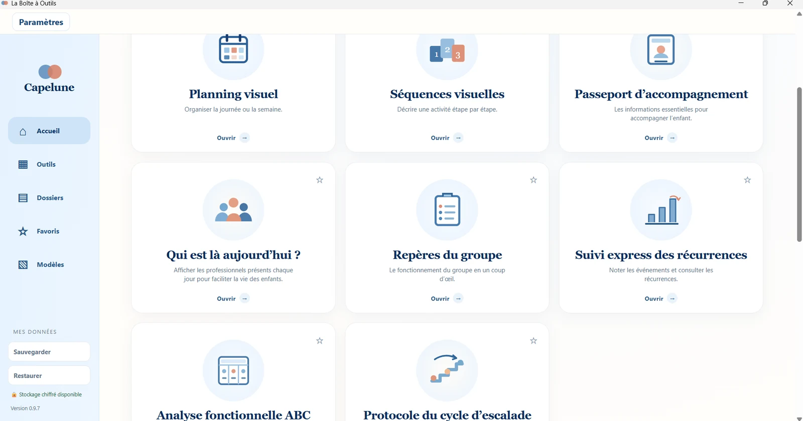
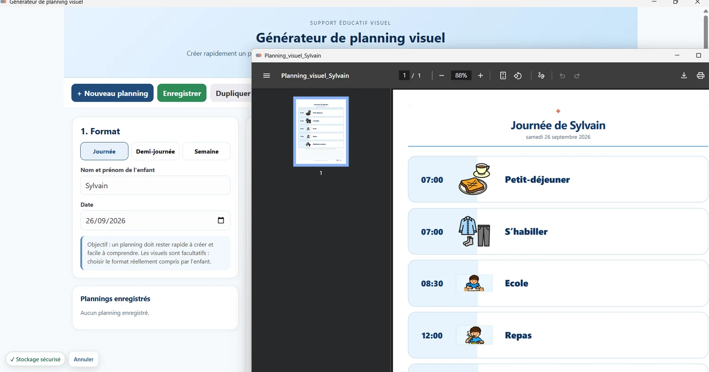
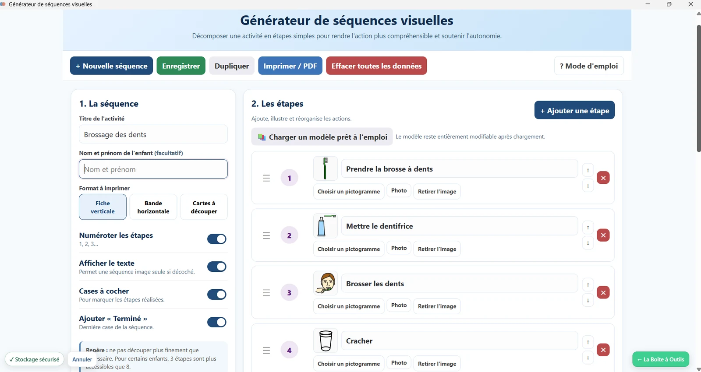
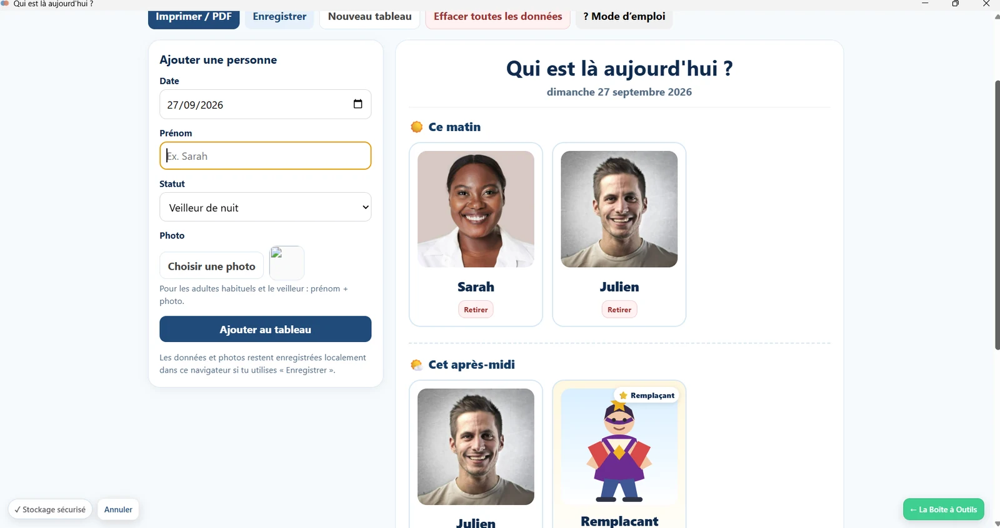
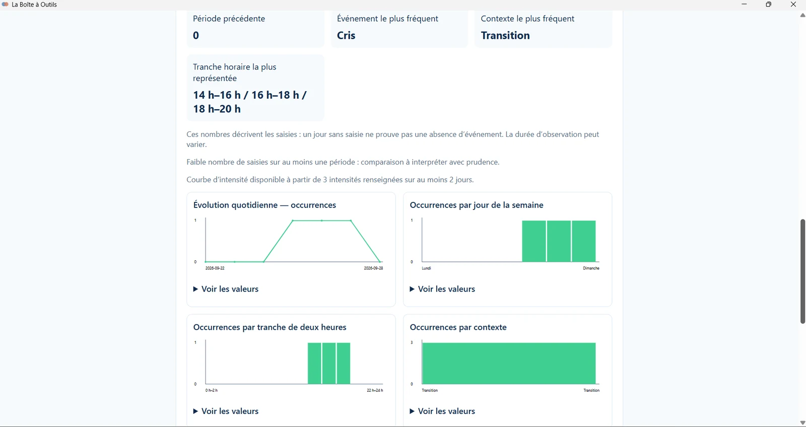

Simple
Comprendre rapidement l’outil, savoir quoi renseigner et avancer sans maîtriser un logiciel complexe.
La Boîte à outils est un logiciel destiné aux équipes éducatives et médico-sociales. Il permet de créer, adapter et réutiliser simplement des supports utiles dans l’accompagnement quotidien, avec une prise en main pensée pour les réalités du terrain.

Interface réelle de La Boîte à outils — version 0.9.7.
Un logiciel conçu à partir des contraintes du terrain.
Pour aider les professionnels à agir rapidement, sans complexifier leur pratique.
Changements de professionnels, remplacements, rendez-vous, imprévus, manque de temps et niveaux de formation différents au sein d’une même équipe : La Boîte à outils a été conçue avec ces réalités dès le départ.
Les modules sont guidés, modifiables et réutilisables afin qu’un professionnel puisse rapidement comprendre quoi faire et produire un support utilisable, sans avoir besoin d’être spécialiste des TND.
Comprendre rapidement l’outil, savoir quoi renseigner et avancer sans maîtriser un logiciel complexe.
Créer, adapter et réutiliser un support au moment où l’équipe en a réellement besoin.
Rendre des outils et des pratiques issus des champs des TND et du handicap utilisables par des professionnels aux niveaux de formation différents.
Les modules sont réunis dans une même interface. Le professionnel retrouve ses outils et ses repères dans un même environnement, sans multiplier les logiciels ou les supports.
Chaque module part d’un besoin concret des professionnels. L’objectif : proposer un cadre suffisamment structuré pour guider l’usage, tout en restant simple à adapter à la situation de l’enfant, du jeune ou du groupe.
Organiser une journée ou une semaine et créer rapidement un planning lisible. Horaires, texte, pictogrammes ou photos peuvent être ajustés selon ce qui est réellement compris et utile pour l’enfant.

Décomposer une activité en étapes simples et compréhensibles, à partir de modèles prêts à l’emploi qui restent entièrement personnalisables.

Repérer les phases de montée en tension et formaliser des réponses d’apaisement adaptées et partagées par l’équipe.
Structurer l’observation autour des antécédents, du comportement et des conséquences afin d’éclairer la réflexion éducative.
Rassembler les repères utiles à l’accompagnement pour faciliter leur compréhension et leur transmission entre professionnels.
Un repère simple pour rendre visibles les adultes présents le matin, l’après-midi et la nuit. Le professionnel renseigne les présences et peut associer une photo lorsque cela est utile.
Un exemple concret d’outil conçu à partir d’une situation ordinaire du quotidien institutionnel.

Noter des événements et visualiser leurs récurrences pour disposer d’éléments plus objectifs : évolution quotidienne, contexte le plus fréquent, tranche horaire ou répartition dans la semaine.
Les observations recueillies soutiennent la réflexion professionnelle ; elles ne remplacent pas l’analyse de l’équipe.

Présenter de façon structurée le fonctionnement quotidien du groupe afin que les informations essentielles soient rapidement accessibles, notamment lors d’un remplacement ou d’une arrivée.
La Boîte à outils est conçue dans une logique de minimisation des données et de limitation des échanges avec des services externes.
Le logiciel privilégie le stockage local des informations. Les connexions externes nécessaires à certaines fonctions sont limitées et identifiées.
La documentation technique précise les modalités de stockage, les flux et les mesures de sécurité mises en œuvre.
La Boîte à outils est pensée pour les professionnels éducatifs et médico-sociaux, notamment en protection de l’enfance (MECS, lieux de vie, services éducatifs), en IME, DITEP, SESSAD, au sein d’équipes mobiles et plus largement dans les établissements ou services confrontés à des besoins de repérage, de structuration et d’adaptation.
Contactez Capelune pour échanger sur vos besoins, demander une démonstration ou envisager une phase de test.